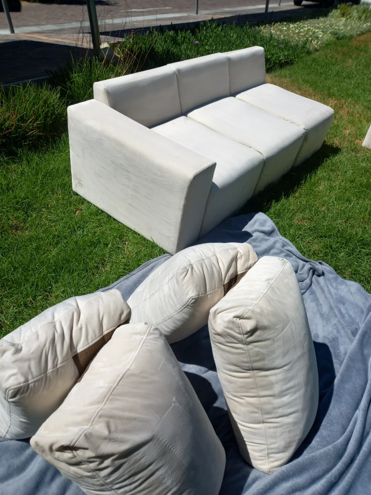

About Quinton Chinoz Projects Cape Town
Founded with a passion for immaculate spaces and honest service, Quinton Chinoz Projects is a Cape Town-owned cleaning business dedicated to restoring the beauty, hygiene, and freshness of homes and workplaces across the Western Cape.
Personal Care, Industrial Results
At Quinton Chinoz Projects, we believe deep cleaning shouldn't be an impersonal, rushed experience. Every lounge suite, carpet, mattress, and car seat we treat is handled with meticulous attention to detail by team leaders who genuinely take pride in their craft.
Led on-site by Quinton and Ernest, our teams arrive punctually, assess fabrics honestly, and use commercial-grade injection-extraction machinery combined with biodegradable, pet-friendly products. Over 80 verified 5-star Google reviews testify to our consistency, reliability, and transformative results.
-
100% owner-supervised quality on every project -
Zero harsh chemicals — safe for pets, toddlers, and asthmatics -
Competitive, transparent rates with no surprise travel fees -
Thorough cleanup after every completed assignment

Integrity & Trust
We treat your home and belongings with the utmost respect. As client Ingrid Green remarked: "Trustworthiness is unbelievable... moved out for 4 days, came back to a palace."
Reliability & Punctuality
We respect your busy schedule. We communicate clearly, provide confirmed arrival time windows, and arrive prepared to get straight to work.
Eco-Friendly Safety
Our cleaning detergents are biodegradable and non-toxic, protecting local Cape Town waterways and keeping your family safe from harsh synthetic residues.
Customer-Centric Care
We only consider a job finished when you inspect and smile. Friendly communication, fast drying times, and complete customer satisfaction are our hallmarks.
Experience the Quinton Chinoz Difference
Get in touch today for an instant quote on carpets, couches, mattresses, tiles, or car interiors.